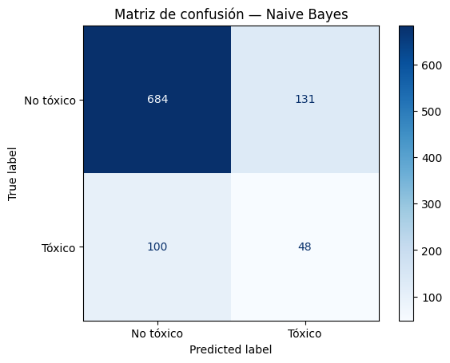
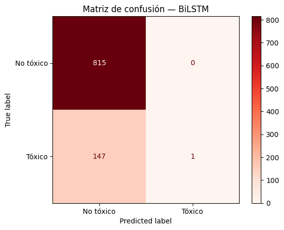
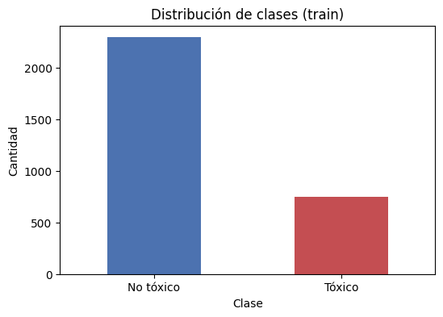
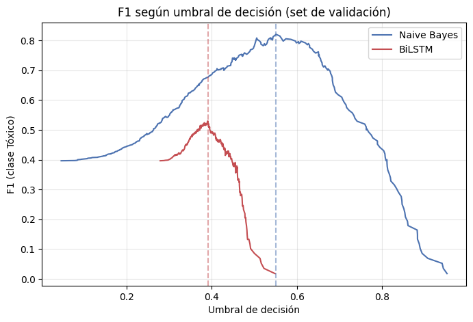

Sistema de PLN de punta a punta que estima si un comentario en español es tóxico, a partir de 4.011 comentarios reales de 16 medios de noticias. Comparación honesta entre un modelo clásico y uno neuronal — con un colapso real, diagnosticado y corregido en vivo.
El mismo pipeline de preprocesamiento entrena los modelos y alimenta la interfaz final — sin duplicar lógica.
Limpieza, stopwords, lematización. Normalización de tildes dos veces: spaCy las reintroduce desde su diccionario interno al lematizar.
TF-IDF con bigramas para el modelo clásico; embeddings multilingües densos para la representación semántica.
5 temas latentes descubiertos sin supervisión, usando su propia representación bag-of-words.
Modelo preentrenado en español, cruzado con el tema dominante de cada comentario.
Comparación clásico vs. neuronal sobre el mismo split de test, con compensación de clases.
Modo individual y modo lote (CSV), accesible sin conocimientos técnicos.
Comparación sobre el mismo conjunto de test (963 comentarios), con la misma división train/test para ambos modelos.




5 temas latentes, encontrados sin decirle al modelo de qué trataba cada comentario.
La interfaz corre en Gradio y no requiere conocimientos técnicos para usarse.
El modelo se ejecuta en un notebook de Google Colab. El enlace de abajo está activo únicamente mientras la sesión esté corriendo (ventana temporal de hasta 72 horas por ejecución).
Abrir demo en vivo →Sesgo geográfico. El corpus proviene de medios de España y Latinoamérica; modismos muy locales (ej. bolivianos) pueden generalizar peor.
Sarcasmo e ironía. "Eres hermoso" fue clasificado como tóxico — el modelo aprendió que en este corpus político, esa palabra suele aparecer en contexto irónico.
Precisión moderada. 0.27 en la clase Tóxico: una parte relevante de las predicciones positivas son falsos positivos.
Tamaño del corpus. 4.011 comentarios es adecuado para un proyecto académico, pero moderado frente a un sistema de producción.